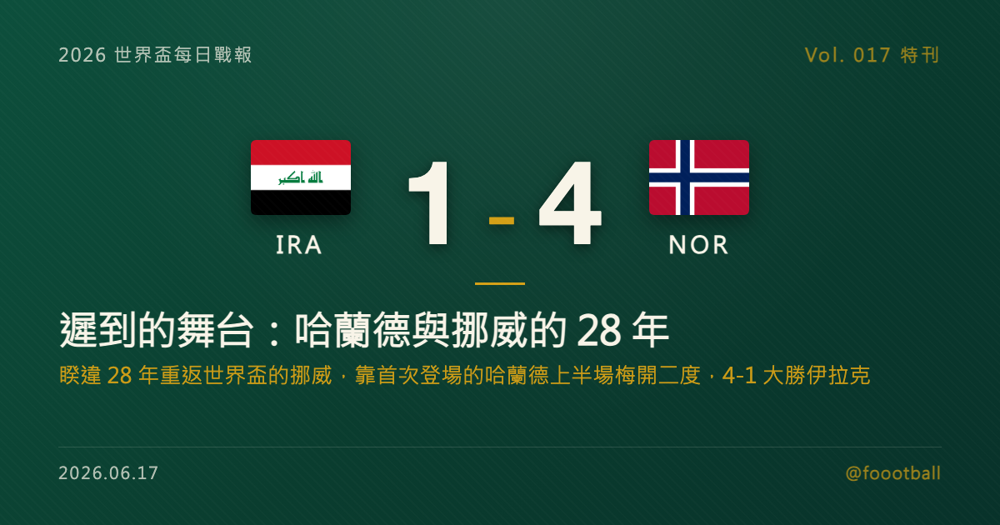

遲到的舞台：哈蘭德與挪威的 28 年
2026 世界盃 I 組首輪，睽違 28 年重返世界盃的挪威 4-1 大勝伊拉克。挪威的兩座基石，是首次踏上世界盃舞台的哈蘭德（Erling Haaland）——他在第 29、43 分鐘梅開二度，幫球隊上半場就奠定勝局，並獲選全場最佳球員。這篇特刊，從挪威 1998 年之後那段漫長的缺席講起，談到哈蘭德這一夜的兩顆進球，以及一支球隊與一位球星，如何終於等到屬於自己的舞台。

2026 世界盃特刊｜Vol. 017 番外
有些球員，你會理所當然地以為他「當然踢過世界盃」——直到你發現，他其實一次都還沒踢過。
2026 世界盃 I 組首輪，在波士頓近郊福克斯堡的吉列體育場（Gillette Stadium），挪威迎來他們睽違 28 年的世界盃之旅。上一次挪威站上世界盃，還是 1998 年的法國；那一年，這支球隊的當家射手哈蘭德（Erling Haaland）甚至還沒出生。而當這個遲到了近三十年的舞台終於鋪開，挪威用一場 4-1 大勝伊拉克，宣告了自己的回歸——而撐起這場勝利的，正是第一次踏上世界盃的哈蘭德。
一、29 分鐘與 43 分鐘：把等待化成兩顆球
挪威沒有讓這一天變得漫長。
第 29 分鐘，哈蘭德首開紀錄，為挪威取得領先；伊拉克在第 39 分鐘由 Aymen Hussein 扳回一城、一度把比分追近，這也是全場唯一一次攻破挪威球門的時刻。但挪威的回應幾乎是立刻到來——第 43 分鐘，哈蘭德再下一城，梅開二度，把比分重新拉開為 2-1，也讓兩隊帶著這個領先走進中場。
對哈蘭德這個等級的射手來說，上半場兩顆進球或許不算什麼新鮮事；但放在「世界盃首秀」這個情境裡，它的份量完全不同。下半場，挪威由 Leo Ostigård 再添一城，終場前又把比分擴大到 4-1。九十分鐘過後，挪威以一場大勝完成回歸，哈蘭德則順理成章拿下全場最佳球員——他用最直接、最像他自己的方式，回應了這份等了一輩子的期待。
二、28 年：一段漫長的缺席
要理解這兩顆進球的重量，得先理解挪威等了多久。
1998 年法國世界盃之後，挪威就再也沒有出現在世界盃的決賽圈。這中間的近三十年，足球世界換了好幾輪面孔，挪威也經歷了無數次「差一點」——預選賽的遺憾、附加賽的飲恨，一次又一次與世界盃擦肩。對挪威球迷來說，這份等待是以「一個世代」為單位計算的：有人從少年等到了中年，有人甚至沒能等到這一天。
更讓人唏噓的是，這段缺席期，恰恰也是挪威足球人才最不缺的年代之一。當哈蘭德這樣的射手在歐洲頂級聯賽予取予求、把一座座進球紀錄踩在腳下時，他的國家隊卻始終敲不開世界盃的大門。一位頂級射手遲遲無法登上足球最高舞台，這種「天賦與舞台的錯位」，本身就是這支球隊故事裡最揪心的一筆。
而 2026 年，這一頁終於翻了過去。
三、終於來了：當天賦遇上舞台
所以當哈蘭德第一次穿著挪威戰袍站上世界盃的草皮，這件事的意義，遠不只是「一位球星又踢了一場比賽」。
那是一個球員生涯裡，本該理所當然、卻偏偏遲到了許久的時刻；也是一整支球隊、一整代球迷，用近三十年的耐心換來的一夜。而哈蘭德沒有讓這一夜留下任何遺憾——他用上半場的梅開二度，把所有積壓的期待，乾淨利落地兌現成了計分板上的數字。
當然，一場小組賽的勝利，還不足以定義一支球隊在這屆世界盃能走多遠。挪威接下來還有硬仗要打，I 組裡也有法國這樣的奪冠熱門虎視眈眈。但對一支睽違 28 年才回到這裡的球隊來說，用一場 4-1 為自己的回歸揭幕，已經是再好不過的開場白。
遲到的舞台，終究還是來了。而站在聚光燈最中央的那個人，只用了 43 分鐘，就讓所有人記住：有些等待，值得。
本文為 2026 世界盃每日戰報的延伸特刊。賽果與紀錄經多家媒體（ESPN、Sky Sports、Opta Analyst、France 24 及台灣聯合報、中時等）交叉核對。挪威睽違 28 年（1998 年後首次）重返世界盃、哈蘭德世界盃首秀梅開二度均屬實。